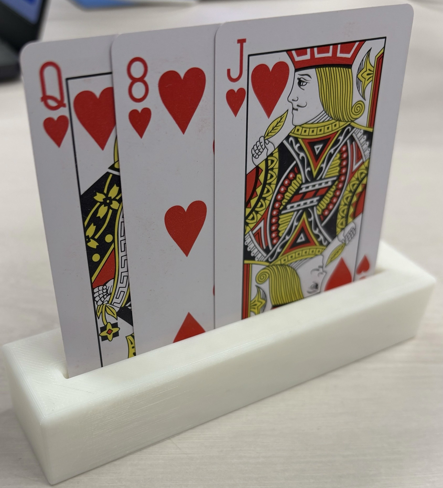

２０２５年５月２３日
【やったこと】
1.世代間交流グループを主に方向性決め
2.他所属グループの進捗情報の確認
世代間交流グループ
インタビュー動画の視聴後、メンバー間で問題認識の擦り合わせを行った。
世代間で進むか、交流をメインで進めるか話し合った結果、どちらもサービス重視になる未来しか見えなかった。
例えば、おばあちゃんが生活の知識を伝え、若者がスマホの使い方を教え、相互にメリットのあるサービス。
しかし、高齢者はデジタルデバイスにそもそも慣れていない。
そこで、若者も、高齢者も来たくなるような場所を考えた。
モノを作るという点で、パズルのように1つの作品が完成するようなモノを置き、訪れるごとに形が変わっていくものはどうかと考えた。
ただ、それを置くとしても、カフェなどの施設での運用と考えると、この短期間で形にすることは困難だという判断に至る。
→結果、個人的にやりたかった３人で遊べるゲーム作りを考えた。
その着想から・・・
高齢者が知っているものと若者言葉を使ったゲームを考案！
世代間ゲーム→カタカナーシ(おばあちゃんの知恵版)
次回から作成に取り掛かる。
(買い物サービスに取り掛かる可能性も・・・？！)
COCORUかまくらインタビューで実用できることが大事！
他所属グループの進捗情報の確認
- トランプ→カードを立てるスタンド作成(3Dプリンタで作成)

- 鎌倉市のゴミ問題→公式ラインを使用した画像認識システムを作成する予定を共有(次回実際に作成)
個人的なトランプ案(そういちろうに共有済み)
→本のような形で仕切り板を立てて、机にカードを広げて遊べる！
→数字の面を見ながら遊べるように、半分か端に裏面の柄を搭載(シールで隠す)